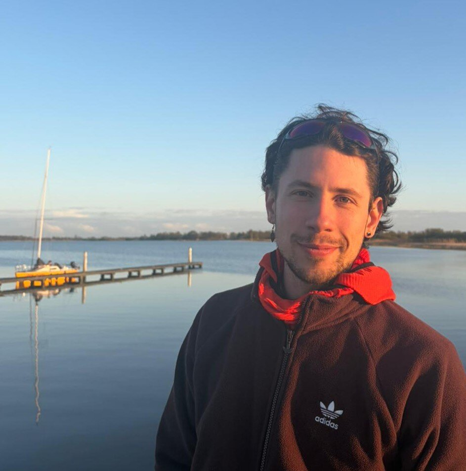
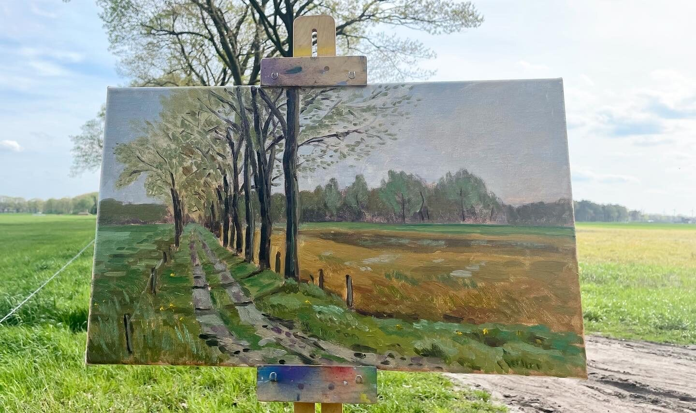
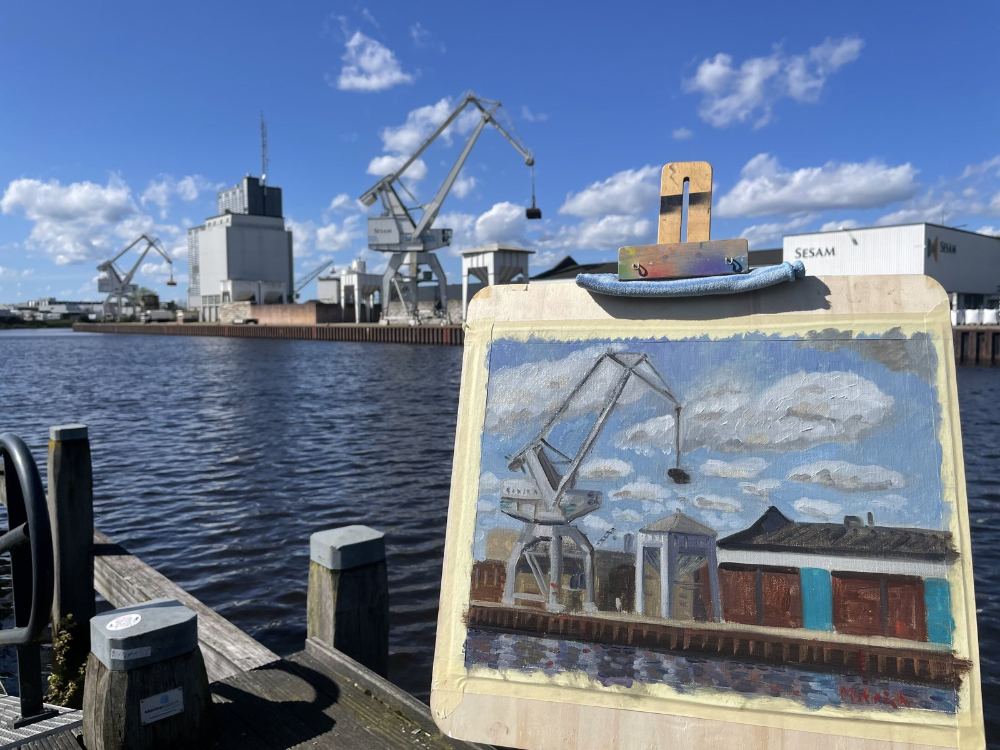
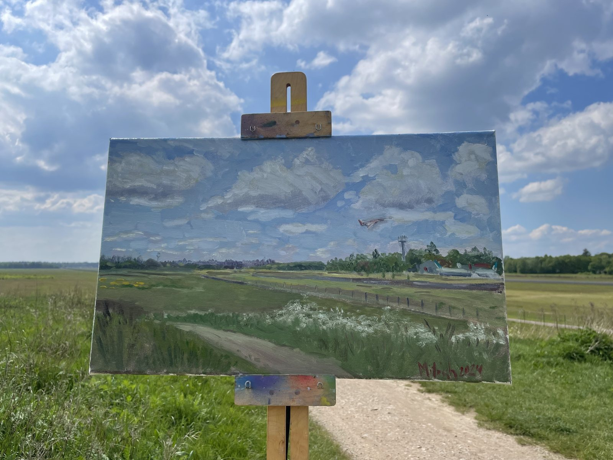
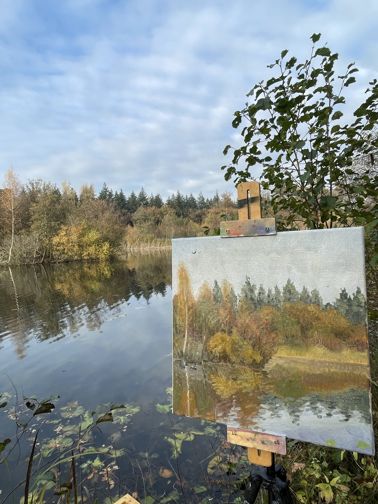
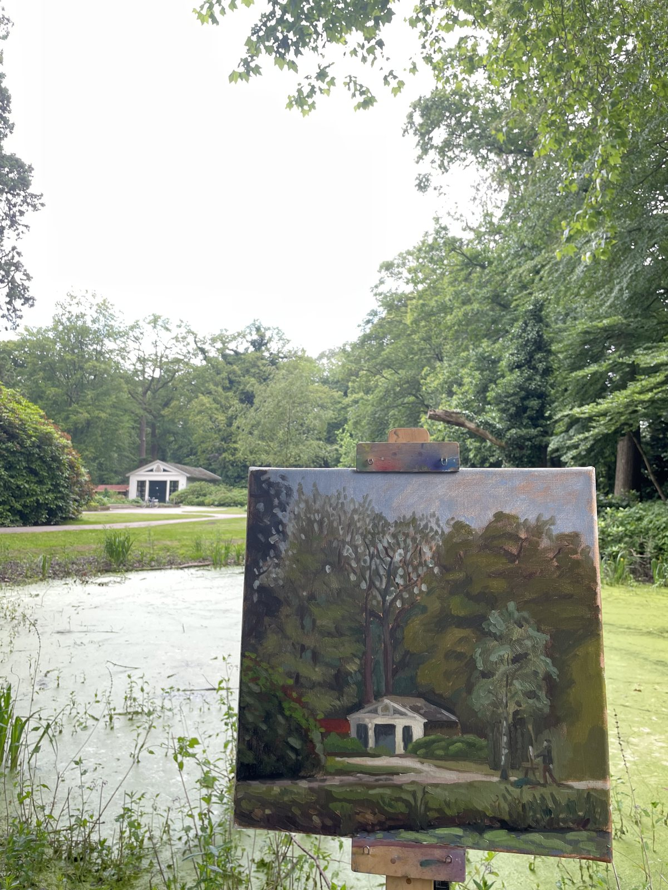
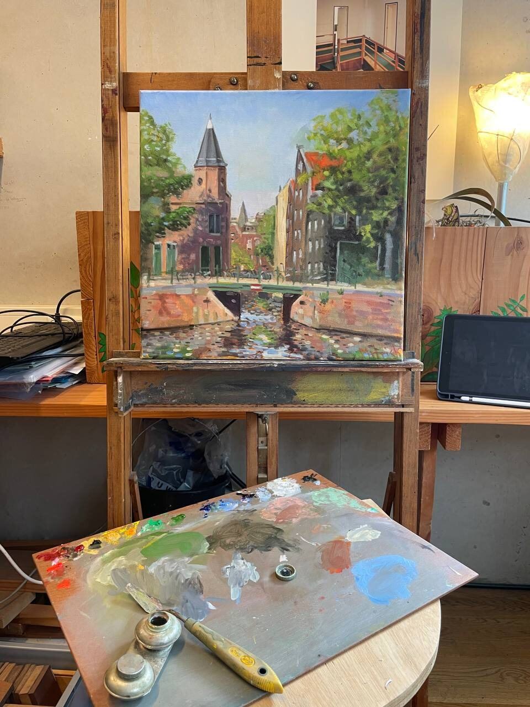
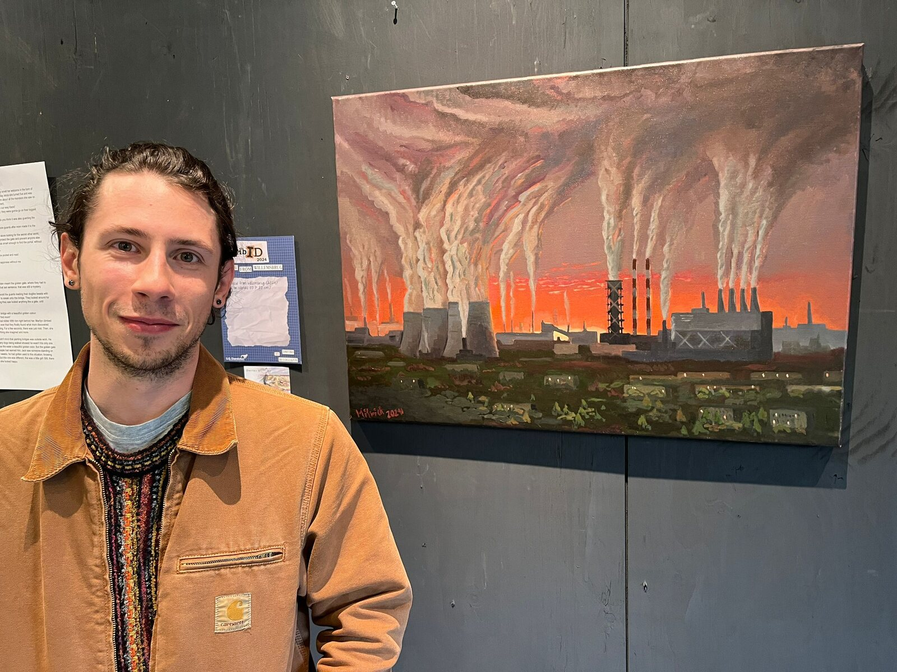

Painter · Oil on canvas
Dmitrii
Beloglazov
Landscape. Urban and Nature. …and cats.
I paint the Dutch city and countryside: Amsterdam's canals and port, industrial Enschede, the polders around Hoofddorp and the Nederrijn near Amerongen. Most paintings start outside at the easel and are finished in the studio.
In Saint Petersburg I worked as an art technician in a theatre decorations workshop and exhibited with the non-conformist group Parazit. Today I paint in the Netherlands alongside a master's in Offshore and Dredging Engineering at TU Delft.

Work
Large format
Plates 1–8Middle format
Plates 9–27Small study series
18 × 24 cm…and cats
Process
My paintings begin outside. I set up on a quay, in a street or at the edge of a field and paint from what is in front of me, then finish the canvas in the studio. Larger works are made differently: I collect graphic and colour sketches on location and assemble them into the final composition in the studio.
I live between two kinds of landscape. Much of my life happens in the city, and I go out into nature whenever I can: the polders around Hoofddorp, the Nederrijn near Amerongen, the fields around Rutbeek. I don't see one as an escape from the other. A harbour crane against the clouds and a farm track after rain are equally worth looking at, and my paintings put them side by side.







About
Biography
- 2019
- Art technician, theatre decorations workshop, Saint Petersburg
- 2020–2022
- Member of the non-conformist art group Parazit; regular exhibitions at Borey Gallery, Saint Petersburg
- 2023–2025
- BSc Civil Engineering, University of Twente
- 2026–now
- MSc Offshore and Dredging Engineering, TU Delft
Selected exhibitions
- 2024
- Artists Against Kremlin, group exhibition, De Balie, Amsterdam
- 2024
- Urban Noir, solo photography exhibition, University of Twente
- 2024
- ExhibID, group exhibition, University of Twente
Contact
For exhibitions, commissions or questions about a painting:
dmbeloglazov.one@gmail.com